Как читать авторский курс и нормативные материалы
Это учебные материалы, а не заключение о соответствии конкретного продукта. Организационные модели курса отделяйте от терминов стандарта: ППК в опубликованном проекте — машиночитаемый перечень, а живой реестр его версий является практикой сопровождения. Термин OSA в разных материалах имеет разный охват. Статус и обязательность нормативного документа проверяются отдельно; проект КАПО опубликован как проект первой редакции.
П36. Итоговый мини-проект
Цель
Собрать в один защищаемый артефакт сквозной SCA/OSA-процесс для C/C++ legacy-продукта с несколькими исполнителями — от генерации SBOM/ППК до readiness-решения по релизу. Проверяемый результат — комплект сдачи, в котором каждое решение трассируется по пяти обязательным элементам: источник факта → инструмент проверки → владелец решения → нормативная опора → evidence.
Чем мини-проект отличается от предыдущих практик П37–П40 тренировали отдельные узлы (слои образа, честный SBOM, AI-кластеры, огнестойкость процесса). Здесь они сшиваются в один процесс: вы не запускаете новый инструмент, а показываете, что артефакты узлов складываются в управляемую цепочку «факт → проверка → владелец → норма → evidence» без разрывов.
Команда или действие
Это интеграционная практика. Соберите комплект сдачи (см. задание итогового проекта) и пройдите по чек-листу самопроверки, прежде чем нести на защиту:
Состав сдачи:
[ ] архитектурная схема процесса (mermaid/диаграмма потоков артефактов)
[ ] регламент поставки артефактов от соисполнителей (что, в каком формате, с какой подписью)
[ ] SBOM quality checklist (пороги coverage PURL/CPE/license, unresolved worklist)
[ ] license policy (allow/deny/review, порядок исключения)
[ ] vulnerability triage policy (severity + БДУ + VDR/VEX, SLA)
[ ] acceptance criteria для пилота инструмента
[ ] матрица соответствия: ГОСТ Р 56939-2024, проект КАПО, NIST SSDF, BSI TR-03183-2
Самопроверка трассируемости (для каждого решения в процессе):
source -> откуда факт (SBOM/ППК, build log, layer diff, license scan, VDR)
tool -> чем проверено (генератор фактов, сервис аудита/вердиктов, CI gate)
owner -> чья роль принимает решение (роль, не ФИО)
norm -> на какой пункт нормы опирается
evidence -> ссылка на артефакт, версия инструмента, дата
Архитектурную схему оформите как поток артефактов, чтобы на защите было видно, где стоят гейты:

Что вы должны увидеть
Готовый комплект, который проходит самопроверку трассируемости без «дыр»: для каждого решения заполнены все пять элементов. Ориентир по рубрике (100 баллов, 6 блоков — та же, по которой идёт защита):
| Блок | Баллы | Закрыт, если... |
|-----------------------------------------------|------:|------------------------------------------|
| Полнота процесса и ролей | 20 | все артефакты на месте, у каждого владелец|
| Качество технической архитектуры | 20 | схема показывает гейты и потоки фактов |
| Учёт C/C++ legacy и сборочного контекста | 20 | есть build evidence, не только SBOM |
| Лицензионная чистота и юридический workflow | 15 | allow/deny/review + порядок исключения |
| Уязвимости, БДУ, VDR/VEX и readiness | 15 | triage с SLA, связь с БДУ ФСТЭК |
| Нормативная трассировка и evidence | 10 | матрица соответствия + ссылки на evidence |
Признак готовой работы: вы можете взять любое решение из процесса (например, «компонент X допущен к релизу») и за минуту назвать его источник факта, инструмент, владельца, норму и evidence. Если хоть один элемент «повисает» — блок «Нормативная трассировка и evidence» (10 баллов) не закрывается.
Одна строка трассировки целиком Решение: «libfoo 2.3 допущена, несмотря на CVE-2026-XXXX». source — SBOM продукта (PURL
pkg:conan/libfoo@2.3) + VDR; tool — сервис аудита/вердиктов; owner — роль «владелец продукта по ИБ»; norm — ГОСТ Р 56939-2024 (управление уязвимостями), VEX-статусnot_affected; evidence — VEX-документ с обоснованием reachability, дата, версия сканера.
Если не получилось
- Комплект есть, но решения не трассируются. Самая частая потеря баллов: артефакты приложены, а связать конкретное решение с источником/нормой/evidence нельзя. Пройдите самопроверку построчно — каждая «дыра» это минус на защите.
- SBOM без build evidence для C/C++. Для legacy на C/C++ один SBOM не считается достаточным: нужны доказательства сборочного контекста (флаги, статически слинкованные библиотеки). Без них блок «Учёт C/C++ legacy» не закрывается.
- Нет владельца у решений. Если в процессе не назначены роли (без ФИО), это описание инструментов, а не процесс. Привяжите решения к ролям через RACI.
- Матрица соответствия — список стандартов без маппинга. Перечисление «ГОСТ, NIST, BSI» без указания, какой пункт какому шагу процесса соответствует, не закрывает нормативную трассировку.
Критерий зачёта
Защита итогового проекта: комплект сдачи в полном составе + демонстрация на одном-двух решениях, что цепочка «источник → инструмент → владелец → норма → evidence» замкнута. Оценка выставляется по рубрике из 6 блоков; блок evidence закрывается только при наличии трассируемых артефактов, а не убедительности доклада.
Оценивается evidence, а не обаяние доклада На дне аттестации блок «Нормативная трассировка и evidence» не закрывается, если за словами нет артефакта для аудита. Готовьте не презентацию, а доказательную базу: ссылки на SBOM, VDR/VEX, протоколы гейтов с датами и версиями инструментов.
Нормативная связка
- Модуль М15 — методика и день итоговой аттестации.
- Узлы, которые сшивает мини-проект: П37. Контейнерный образ слои секреты и удаленные файлы, П38. Честный SBOM контейнерного образа, П39. SBOM for AI minimum elements, П40. Огнестойкость РБПО и SCA процесс.
- Задание и рубрика: Итоговый проект.
- Шаблоны: Матрица соответствия требованиям, Шаблон управленческой сводки готовности, RACI для SCA/OSA процесса, Регламент композиционного анализа ПО.
- Нормативка: ГОСТ Р 56939-2024, проект ГОСТ Р по КАПО, NIST SSDF (PS.3.2/PW.4/RV.1), BSI TR-03183-2, БДУ ФСТЭК.